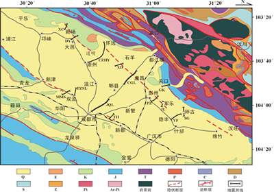

In order to investigate the shallow crustal structure, spatial distribution, and activity of the Longmenshan Fault Zone and the Chengdu Basin, seismic exploration data for the Sichuan Basin and the foreland of the Longmenshan Mountains were made available to the Wenchuan Earthquake Scientific Expedition Team by China National Petroleum Corporation and China Petrochemical Corporation after the occurrence of the 5.12 Wenchuan earthquake. Through the reanalysis and interpretation of seismic exploration data, the structure of the foreland thrust sheet of the Longmenshan Mountains, the structure of the foreland basin, and the spatial distribution characteristics of fault structures were obtained. Based on this, the latest controlled source and high-resolution shallow seismic exploration methods were employed to detect hidden faults in the Chengdu Plain, obtaining the location, nature, and near-surface characteristics of these hidden faults. The research results provide important basic data for understanding the deep and shallow structural relationships in the region, seismic hazard assessment, and post-disaster reconstruction planning.
1. Longmenshan and Foreland Basin Structure and Tectonic Studies
Structural and fault spatial distribution information was obtained based on seismic profile data for the thrust sheet and foreland basin of the Longmenshan Mountains. The results show that the Longmenshan Fault Zone and the foreland hidden faults exhibit imbricate thrusting and overthrusting towards the Chengdu Basin. In the thrust sheet in front of the mountains, there is intense structural deformation, and reverse faults are developed, creating a series of tensional folds on both sides of the fault. The basal reverse fault in the Longmenshan Mountains appears to bifurcate, entering the ductile shale layer of the Triassic at the lower part and undergoing horizontal detachment and overthrusting in the foreland direction during tectonic transfer. During this tectonic transfer process, multiple branches of the sliding fault appear, either thrusting upward to the surface, forming thrust-overthrust anticlines or fault propagation folds, or forming structural triangle wedges. The Longquanshan Fault Zone is the eastern boundary of this compression transfer zone. It can be seen that there are no large active faults in the Chengdu Basin. The Longquanshan Fault Zone, which is the eastern boundary of the basin, disappears at shallow depths and vanishes above the detachment surface at the base of the Triassic. Therefore, there are no structural conditions for earthquakes with a magnitude greater than 7 in the Chengdu Basin.
2. Hidden Fault Detection Research in the Chengdu Plain
Fifteen shallow seismic profiles with a total length of 103.8 km were designed across the Dayi Fault, Pengzhou Fault, Guankou Fault, and Pujiang-Xinjin-Xindu Fault in the Chengdu Plain. Using the latest controlled source and high-resolution shallow seismic exploration methods, the location, nature, and near-surface characteristics of hidden faults in the Chengdu Plain were obtained. The research results provide evidence for post-disaster reconstruction planning, the selection of major lifeline project locations, and the avoidance of active fault zones during the reconstruction of public facilities such as schools and hospitals.
The research results indicate that the Dayi Fault, Pengzhou Fault, and Mianzhu Fault are distributed in a left-staircase pattern in front of the Longmenshan Mountains (see figure). Among them, the Dayi Fault is mainly distributed in the Xinchang-Daoming area, terminating south of Chongzhou-Huaiyuan Road. The fault trends NE and dips NW, with no obvious activity since the late Pleistocene. The Pengzhou Fault is a NW-trending reverse fault, mainly distributed in the Junle-Huaiyuan area south of Yazi River. In the Zhupu-Pengzhou-Junle area, the fault cuts through Quaternary strata, with an estimated burial depth of about 20m at the upper fault point, preliminarily determined as an active fault since the late Pleistocene. In the Xudu-Huaiyuan section south of Jinma River, the fault only cuts through the Cretaceous strata below the Quaternary and has not been active since the Quaternary. The originally hypothesized Pujiang-Xinjin-Xindu Fault, passing through the Chengdu urban area, is mainly distributed between Danling-Pujiang-Xinjin and disappears south of Shuangliu. Between Shuangliu-Chengdu-Xindu, only locally exists small-scale faults with short extension lengths, and there are no large-scale, long-extending faults.
